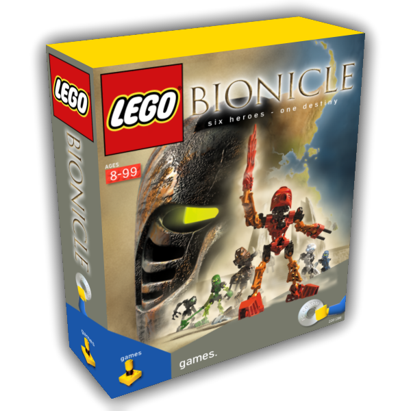

All the action and adventure of Bionicle comes to life on your PC! In May 2018, the unreleased LEGO BIONICLE game, "The Legend of Mata Nui," was leaked to the public after 17 years! Now, finally, you can play as each of the mighty Toa as they search for the Masks of Power!

Liam Robertson • The Beaverhouse • The BioMedia Project • Litestone Studios